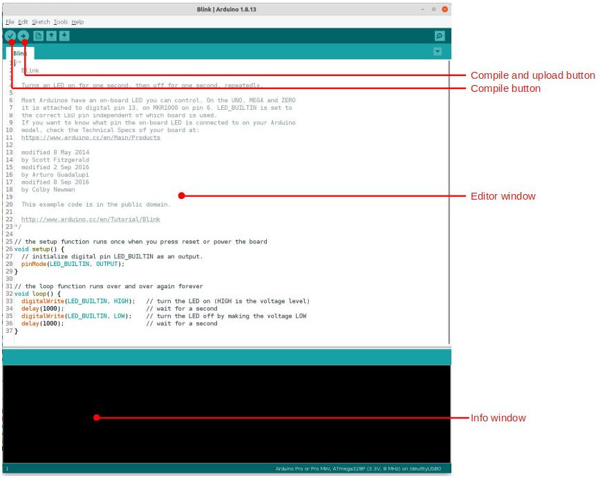
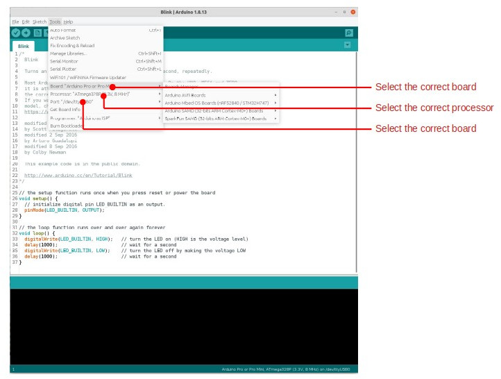

El ecosistema Arduino
Intro¶
Arduino is a fantastic open source hardware ecosystem. It is centered around the Arduino IDE, which is a user-friendly (and open source) software development environment to write and compile computer code that runs on embedded processors such as those that power the Riverlabs loggers.
To make this possible, the folks at Arduino have developed a specific bootloader that allows connecting an Arduino-compatible board to your computer without the need for a specific hardware programmers. If you purchase a Riverlabs logger, then this bootloader will already be installed.
If you want to familiarize yourself with Arduino, then it is worth buying one of the many boards from Arduino and other vendors such as Sparkfun and Adafruit.
A lot of excellent manuals exist to work with Arduino, but the best place is probably the Arduino website. Here we just give a very short overview, providing the minimal knowledge to program the Riverlabs boards. But we strongly encourage you to dive deeper in Arduino if you have the time.
To install the Arduino IDE, simply head to the website to dowload and install it for your operating system.
Programming an Arduino board consists of the following steps:
- Connecting the board to the computer
- Set the correct port
- Set the correct board and board options (if your board has any)
- Compile and upload the code
Many boards can be connected to the computer via a USB cable. The Riverlabs boards are slightly different, as they do not have a USB port, but a serial (UART) port instead. So you will need a serial-to-usb converter instead. See the section on uploading code with Arduino for more details. Once this is done, the remaining steps can be executed via the graphical interface of the Arduino IDE.
The Arduino IDE¶
The user interface of the Arduino IDE consists of two main windows. At the top is the editor, in which you can write and edit the code before uploading. Arduino uses a computer language that is very similar to C++. The screenshot below shows one of the many examples that comes with the installation, Blink.ino, which is a short script to control an LED on an Arduino board. This will not work out of the box on the Riverlabs boards because the LED on the board is connected to a different pin. So you will need to replace "LED_BUILTIN" to "8" for the Wari, and "A2" for the WMOnode.
Below the editor you can find an information window, which displays the output of the compilation and uploading steps, including any errors that may occur during this process.
Of the menus, the "tool" menu is the most important. This is where you set the correct USB port to which the board is attached (menu item "board"), and you will also need to select the correct type of board, and sometimes the correct type of processor. The screenshots below show where these settings can be found.


Now you are ready to proceed to uploading the code to your Riverlabs logger!